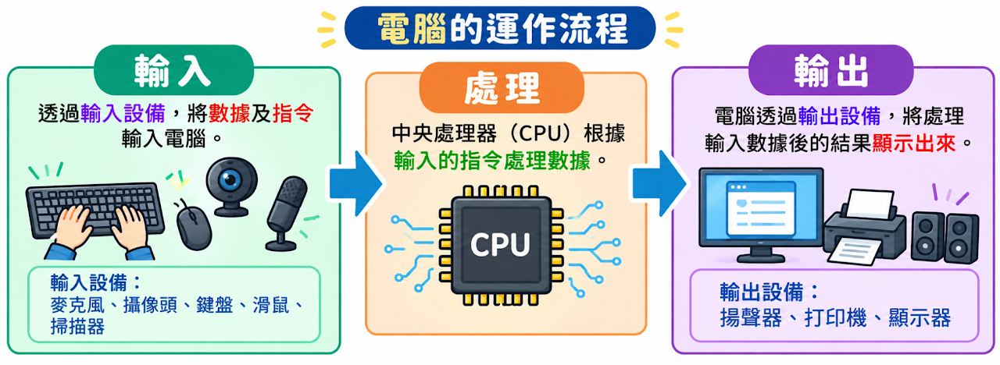
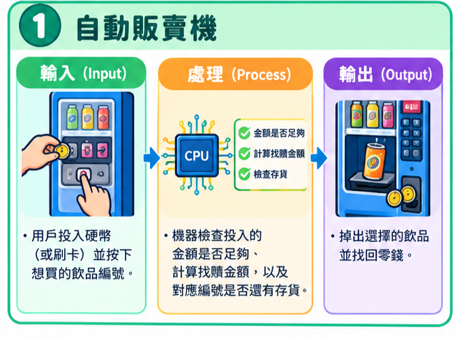
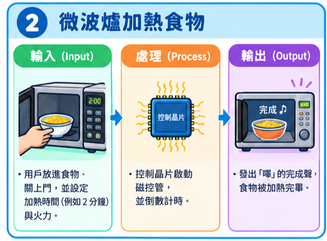
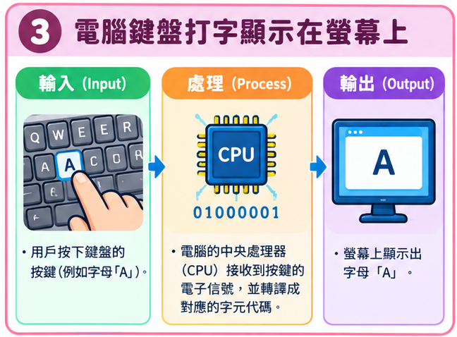
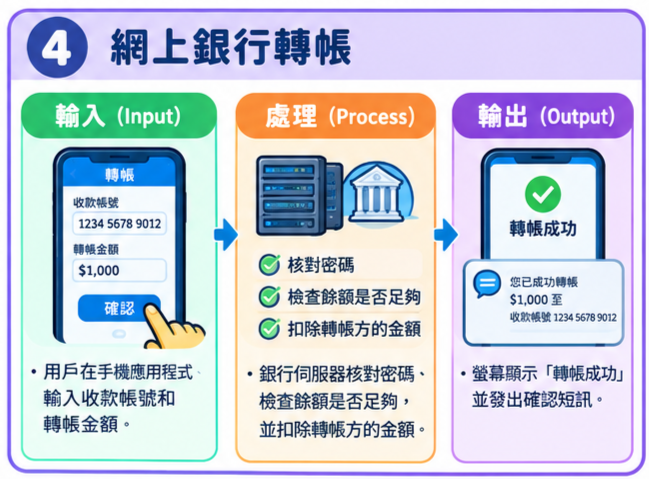
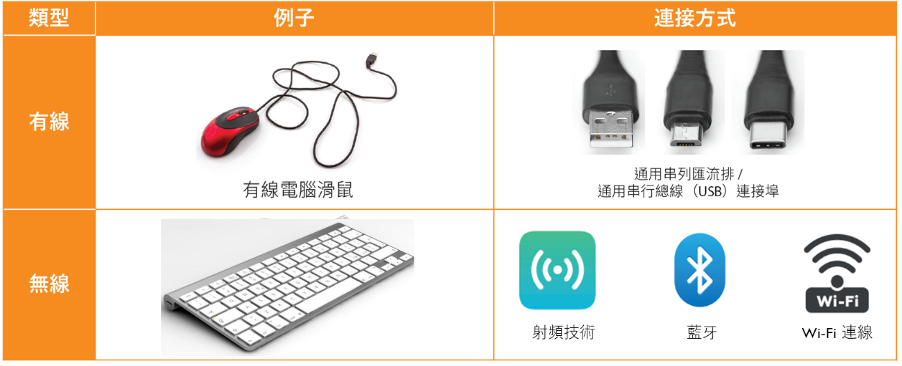

CORE B · B1.1
輸入及輸出設備
Input and Output Devices
認識電腦的輸入與輸出設備，了解它們如何協助完成數據的收集、處理及呈現。
A. 定義：
將數據轉化為資訊需要三個步驟：
- 輸入（將數據輸入電腦）
- 處理（程式會處理所輸入的數據，而先前儲存的數據可在此步驟被存取或更改）
- 輸出（電腦輸出有意義的資訊）
此過程名為輸入－處理－輸出周期／循環。
英文全稱：Input-Process-Output Cycle（簡稱 IPO 週期）

日常生活和電腦系統中的 IPO 周期例子
輸入－處理－輸出周期通常會涉及一些硬件操作。




INPUT DEVICES
B. 輸入設備
輸入設備負責 IPO 週期的第一步，讓電腦接收指令或現實世界中的數據。
透過輸入設備，我們可以向電腦輸入指令，或從現實世界中取得數據並傳輸到電腦。輸入設備可以使用有線或無線方式連接。

1. 輸入設備－鍵盤
鍵盤是可讓用戶透過按鍵的方式，把數據或指令輸入至電腦。
鍵盤會把按鍵轉換成電腦可理解的電子訊號。
一般而言，鍵盤包含字母鍵、數字鍵、標點符號鍵，以及 Shift、Ctrl 和 Alt 等功能鍵。
OUTPUT DEVICES
C. 輸出設備－打印機
觀看影片，認識三種常見打印機的運作方式。